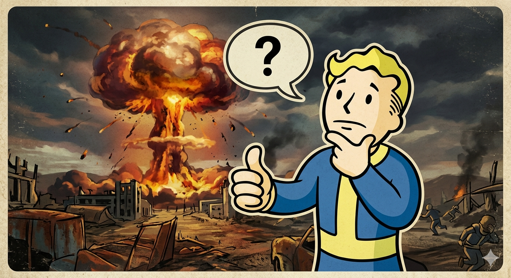
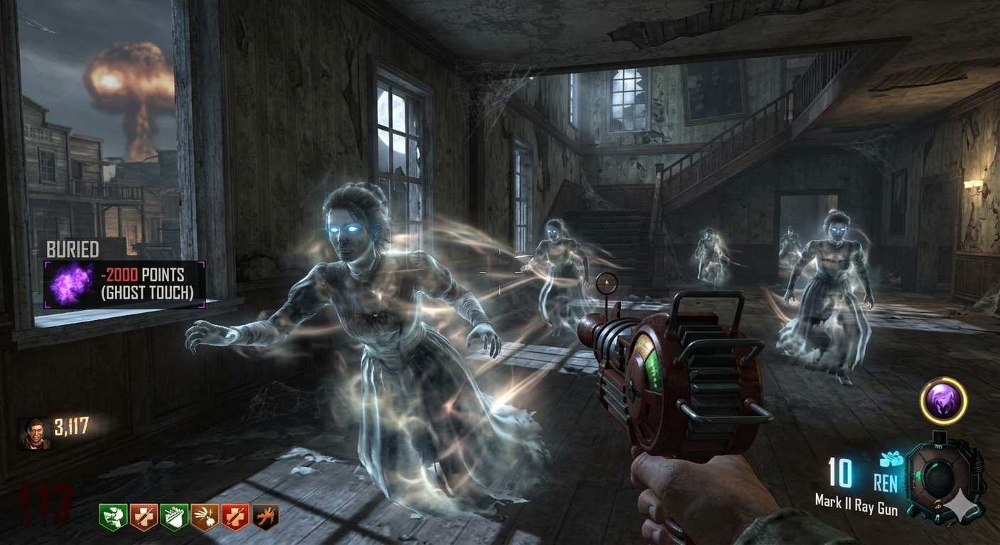
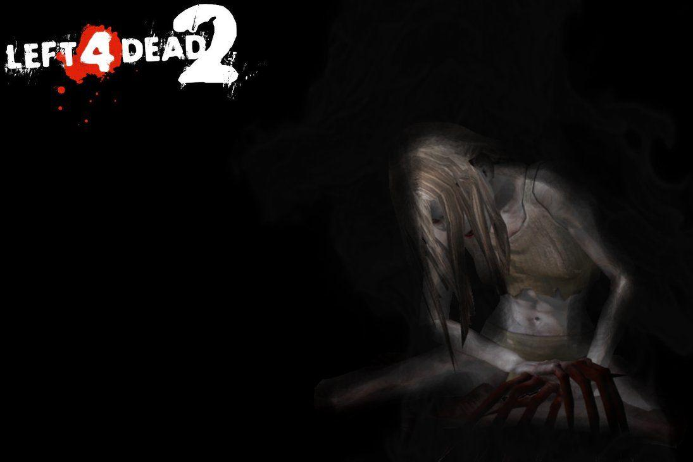

Bienvenido
A lo largo de la historia, muchos videojuegos han desarrollado relatos y elementos que se desvían de su trama principal. Por eso, he decidido reunir algunos de los misterios más curiosos y enigmáticos que rodean a los videojuegos.
Misterios más populares

Misterio 1
En la historia de Fallout se tiene la incognita de quien fue el responsable de la catastrofe del juego.
Ver masMisterio 2
Al final del tercer juego Jak realmente se fue con los precursos o ¿hizo algo mas?
Ver mas
Misterio 3
En Black ops 2 zombies, en el mapa de Buried, nos encontramos con algo mas sobrenatural que los zombies. ¿Quien es?
Ver mas
Misterio 4
En el juego de Pay Day hacemos una mision en un hospital, donde nos encontramos con una Witch.
Ver mas